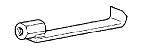
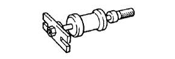
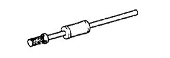
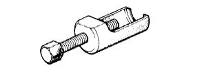

ПЕРЕДНИЙ ПРИВОДНОЙ ВАЛ В СБОРЕ > СНЯТИЕ > Подготовка

|  | 09520-01010 | Переходник съемника приводного вала |
|  | 09520-24010 | Съемник вала полуосевой шестерни дифференциала |
|  | (09520-32040) | Амортизатор |
|  | 09610-20012 | Съемник рулевой сошки |
| Динамометрический ключ | - |
| Индикатор часового типа | - |
 | 09905-00012 | Съемник пружинных стопорных колец № 1 | - |